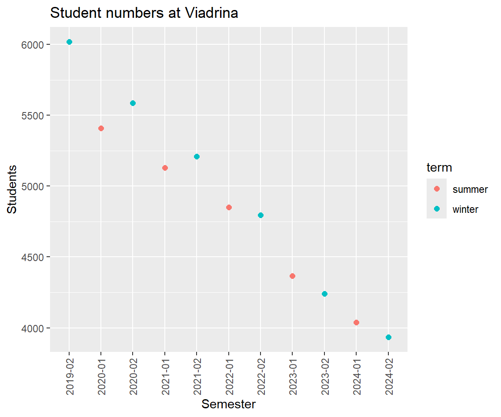

Chapter 6 Web Data
“Over the last two years alone, 90 percent of the data in the world was generated.”
Data scraping is a technique where a computer program extracts data from human-readable output coming from another program. Data scraping often takes place in web scraping (also known as crawling or spidering). In this process, an application is used to extract valuable information from a website. PDF scraping or more general report mining is the extraction of data from human-readable computer reports. It is worth considering alternatives before start scraping data.12
6.1 Most expensive paintings
What do The Card Players and Marshall Islands have in common?

Figure 6.1: The Card Players.

Figure 6.2: Flag of Marshall Islands.
Well, the first was sold for about 250.000.000 million USD in an auction in 2011 and the laters nominal gross domestic product is of similar size 220.000.000 million USD in 2019. About 60.000 people live in Marshall Islands. The most expensive paintings score similar to the gross domestic product of insular states.
This is the English Wikipedia article list of highest prices ever paid for paintings.
In a web browser use the keyboard shortcut CTRL + U (in Google Chrome, Firefox, Microsoft Edge, Opera) to view the source code of a webpage. Alternatively, right click and choose "show source code".
One approach is this. Use read_html() from rvest package to download the webpage. Extract the node table.wikitable with the html_nodes() command. Convert this node into a table with html_table() setting header=TRUE. Use this data in a pipe %>% with bind_rows() and as_tibble().
You can use any other scraping approach.
Store the final table of expensive paintings in paintings. The following DT table should yield identical results.
6.2 Student numbers at Viadrina
Did you notice fewer and fewer fellow students sitting next to you? We analyse enrollment numbers at the European University Viadrina. Dezernat 1 publishes both a long-run PDF time series and semester-specific summary statistics.
The current statistics page is available at https://www.europa-uni.de/de/universitaet/einrichtungen/verwaltung/dezernat-1/studierendenstatistik/index.html.
The website was redesigned after the first version of this chapter. The semester summaries are now collected on one page in expandable sections instead of being stored on a separate URL for every semester.
Information is still presented in two ways: as tables in PDF, for example the time series of total student numbers, and as HTML text for the individual semesters.
A simplified version of the current label-value structure looks like this:
<h3>Wintersemester 2025/26</h3>
<p>Studierende gesamt: 3877</p>
<p>Deutsche Studierende: 2229</p>
<p>Ausländische Studierende: 1648</p>
<p>Weibliche Studierende: 2132</p>
<p>Männliche Studierende: 1728</p>Let's investigate the student numbers.
6.2.1 PDF scraping
Use the built-in download.file() function to download the current PDF. To keep the book reproducible, the download is not performed during a normal render. It only runs when the refresh option is explicitly switched on.
viadrina_pdf_url <- paste0(
"https://www.europa-uni.de/de/universitaet/einrichtungen/verwaltung/",
"dezernat-1/studierendenstatistik/_dateien-statistik/",
"1-entwicklung-gesamtstudierendenzahl/",
"entwicklung-der-gesamtstudierendenzahl.pdf"
)
viadrina_pdf_file <- file.path(
"data", "Viadrina", "entwicklung-der-gesamtstudierendenzahl.pdf"
)
refresh_viadrina <- isTRUE(getOption("bfid.refresh_viadrina", FALSE))
if (refresh_viadrina) {
dir.create(dirname(viadrina_pdf_file), recursive = TRUE, showWarnings = FALSE)
download.file(viadrina_pdf_url, viadrina_pdf_file, mode = "wb")
}To extract a table from a PDF we can use the pdftables package.13 The package is a wrapper for the PDFTables API. It requires an API key from https://pdftables.com/. You can register and get one for free. The result is stored as a .csv file.
Definition
An application programming interface (API) is a way for two or more computer programs to communicate with each other. It is a type of software interface, offering a service to other pieces of software.
Be careful with your API keys. If you only use a file locally on your computer, you might be fine. Don't share this file. Don't upload it. If you upload an API key on Git, you may get a notification from https://www.gitguardian.com/. Instead, put your API key in your environment. This can be done in a .Renviron file. Use usethis::edit_r_environ(scope = "project") to access and edit your information.
Read more:
- https://daattali.gitbooks.io/stat545-ubc-github-io/content/bit003_api-key-env-var.html
- https://resources.numbat.space/using-rprofile-and-renviron.html
- https://github.com/expersso/pdftables
library(pdftables)
convert_pdf(
input_file = viadrina_pdf_file,
output_file = "data/Viadrina/viadrina_students.csv",
api_key = Sys.getenv("PDFTABLES_API_KEY")
)Scraped data often requires a lot of cleaning. The historic PDF-derived CSV is kept locally in the repository, so the following analysis does not depend on a live website.
library(tidyverse)
viadrina_1992_2020_before <- read.csv(
"data/Viadrina/viadrina_students.csv",
header = TRUE
)
viadrina_1992_2020 <- viadrina_1992_2020_before
# Replace header names by the first row.
names(viadrina_1992_2020) <- viadrina_1992_2020[1, ]
# Drop the first and final non-data rows.
viadrina_1992_2020 <- viadrina_1992_2020[-1, ]
viadrina_1992_2020 <- viadrina_1992_2020[-nrow(viadrina_1992_2020), ]
# Remove line breaks and use readable column names.
colnames(viadrina_1992_2020) <- gsub(
"[\\r\\n]",
"",
colnames(viadrina_1992_2020)
)
colnames(viadrina_1992_2020) <- c(
"Year", "Total", "Female", "Female_Pct",
"German", "German_Pct", "Foreign", "Foreign_Pct",
"Pole", "Pole_Pct"
)
# Remove percentage signs and convert all columns to numeric.
viadrina_1992_2020 <- viadrina_1992_2020 %>%
mutate(
across(
everything(),
~ ifelse(
str_detect(.x, "%"),
parse_number(.x, locale = locale(decimal_mark = ",")) / 100,
.x
)
)
) %>%
mutate(across(everything(), as.numeric))6.2.4 Web scraping
The redesigned website no longer uses one URL per semester. Instead, all recent semester summaries are collected on one page. We therefore download one HTML document, identify the semester headings, and extract the labelled values from the text below each heading.
The live scraper is wrapped in a function. During a normal book render, the chapter reads the local snapshot data/Viadrina/viadrina_students_recent.csv. A deliberate refresh downloads the current page, saves the raw HTML, rebuilds the CSV, and then continues with the local file.
library(rvest)
viadrina_stats_url <- paste0(
"https://www.europa-uni.de/de/universitaet/einrichtungen/verwaltung/",
"dezernat-1/studierendenstatistik/index.html"
)
viadrina_html_file <- file.path(
"data", "Viadrina", "viadrina-student-statistics.html"
)
viadrina_recent_file <- file.path(
"data", "Viadrina", "viadrina_students_recent.csv"
)
parse_viadrina_number <- function(block, label_pattern) {
hit <- which(str_detect(
block,
regex(label_pattern, ignore_case = TRUE)
))[1]
if (is.na(hit)) {
return(NA_real_)
}
# Remove the label first. This avoids reading the "1" in
# labels such as "1. Fachsemester" as the observed value.
remainder <- str_remove(
block[hit],
regex(label_pattern, ignore_case = TRUE)
)
number_pattern <- "\\d{1,3}(?:\\.\\d{3})+|\\d+"
values <- str_extract_all(remainder, number_pattern)[[1]]
# Some HTML layouts place the value in the next text node.
if (length(values) == 0 && hit < length(block)) {
values <- str_extract_all(block[hit + 1], number_pattern)[[1]]
}
if (length(values) == 0) {
return(NA_real_)
}
parse_number(
tail(values, 1),
locale = locale(decimal_mark = ",", grouping_mark = ".")
)
}
parse_viadrina_page <- function(page) {
page_text <- page %>%
html_text2()
lines <- page_text %>%
str_split("\\n") %>%
pluck(1) %>%
str_squish()
lines <- lines[lines != ""]
lines <- str_remove(lines, "^\\[Button:\\s*")
lines <- str_remove(lines, "\\s*\\]$")
semester_pattern <- paste0(
"^(Sommersemester|Wintersemester)\\s+",
"\\d{4}(?:/\\d{2})?$"
)
starts <- which(str_detect(lines, semester_pattern))
if (length(starts) == 0) {
stop("No semester headings were found on the Viadrina statistics page.")
}
ends <- c(starts[-1] - 1L, length(lines))
map2_dfr(starts, ends, function(first, last) {
block <- lines[first:last]
semester_label <- block[1]
term <- if_else(
str_starts(semester_label, "Wintersemester"),
"winter",
"summer"
)
year <- parse_integer(str_extract(semester_label, "\\d{4}"))
tibble(
semester_label = semester_label,
students = parse_viadrina_number(
block,
"^Studierende gesamt"
),
female = parse_viadrina_number(
block,
"^(weiblich|Weibliche Studierende)"
),
male = parse_viadrina_number(
block,
"^(männlich|maennlich|Männliche Studierende)"
),
diverse = parse_viadrina_number(
block,
"^Diverse Studierende"
),
unspecified = parse_viadrina_number(
block,
"^ohne Angabe"
),
german = parse_viadrina_number(
block,
"^Deutsche(?: Studierende)?"
),
foreign = parse_viadrina_number(
block,
"^(Ausländer(?:\\*innen|/innen)?|Ausländische Studierende)"
),
first_subject = parse_viadrina_number(
block,
"^(1\\. Fachsemester|Studierende im 1\\. Fachsemester)"
),
first_university = parse_viadrina_number(
block,
"^(1\\. Hochschulsemester|Studierende im 1\\. Hochschulsemester)"
),
year = year,
term = term,
semester = paste0(
year,
if_else(term == "summer", "-01", "-02")
)
)
}) %>%
filter(!is.na(students)) %>%
arrange(year, semester)
}The next chunk only accesses the live website when the CSV is missing or when the refresh option is enabled. If the website is temporarily unavailable, an existing local CSV remains usable.
refresh_viadrina <- isTRUE(getOption("bfid.refresh_viadrina", FALSE))
dir.create(
dirname(viadrina_recent_file),
recursive = TRUE,
showWarnings = FALSE
)
if (refresh_viadrina || !file.exists(viadrina_recent_file)) {
refreshed_data <- tryCatch(
{
viadrina_page <- read_html(viadrina_stats_url)
xml2::write_html(viadrina_page, viadrina_html_file)
parse_viadrina_page(viadrina_page)
},
error = function(error) {
warning(
"The live Viadrina page could not be refreshed: ",
conditionMessage(error)
)
NULL
}
)
if (!is.null(refreshed_data) && nrow(refreshed_data) > 0) {
write_csv2(refreshed_data, viadrina_recent_file, na = "")
}
}
if (file.exists(viadrina_recent_file)) {
viadrina_recent <- read_csv2(
viadrina_recent_file,
show_col_types = FALSE
)
} else {
# Final compatibility fallback for older clones of the repository.
legacy_recent_file <- file.path(
"data", "Viadrina", "viadrina_students_2013_2025.csv"
)
if (!file.exists(legacy_recent_file)) {
stop(
"No local Viadrina data file is available. Add ",
viadrina_recent_file,
" or refresh the live page."
)
}
viadrina_recent <- read_csv2(
legacy_recent_file,
show_col_types = FALSE
) %>%
transmute(
semester_label = paste("Wintersemester", year),
students,
female,
male,
diverse = NA_real_,
unspecified = NA_real_,
german,
foreign,
first_subject = NA_real_,
first_university = NA_real_,
year = as.integer(year),
term,
semester = paste0(year, "-02")
)
}To deliberately update the local files, run the following commands once. A normal build does not need them.
6.2.5 Most recent student numbers
There is a structural difference between summer and winter terms. Most new enrollments are in winter.
viadrina_recent %>%
ggplot(aes(x = semester, y = students)) +
geom_point(aes(colour = term), size = 2) +
labs(
title = "Student numbers at Viadrina",
x = "Semester",
y = "Students"
) +
theme(
axis.text.x = element_text(
angle = 90,
vjust = 0.5,
hjust = 1
)
)
6.2.6 The long run trend
Combine the historic PDF-derived series with the recent HTML-derived semester data.
via_1992_2020 <- viadrina_1992_2020 %>%
transmute(
Year = as.integer(Year),
Total = as.numeric(Total),
Term = "winter"
)
via_recent <- viadrina_recent %>%
transmute(
Year = as.integer(year),
Total = as.numeric(students),
Term = term
)
via_1992_recent <- bind_rows(via_1992_2020, via_recent) %>%
distinct(Year, Term, .keep_all = TRUE) %>%
arrange(Year, Term)Plot and polish. Assume the enrollment for winter 2020/2021 was not affected by the coronavirus pandemic.
via_1992_recent %>%
ggplot(aes(x = Year, y = Total, colour = Term)) +
geom_point() +
geom_smooth(method = "gam") +
scale_x_continuous(breaks = scales::pretty_breaks(n = 28)) +
labs(title = "Student numbers at Viadrina") +
theme_minimal() +
theme(
axis.text.x = element_text(
angle = 90,
vjust = 0.5,
hjust = 1
)
) +
geom_vline(
xintercept = 2020.5,
colour = "grey",
linetype = "solid",
linewidth = 1.3
) +
ggplot2::annotate(
"text",
x = 2021,
y = 4000,
label = "Corona",
colour = "red",
angle = 90,
vjust = 1
)